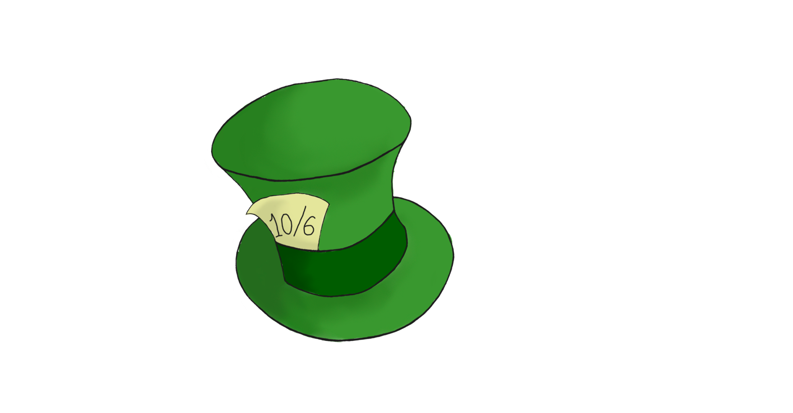

O PROJETO ALICE
Alice Quântica
Iniciado em 2015, o “Projeto Alice”, parceria entre a UTFPR e o Colégio Estadual do Paraná (CEP) teve seu primeiro ato ao encenar a peça “Alice Quântica”, escrita por Walmor Cardoso Godoi, com revisão técnica de Awdry Miquelin, Luciana Rocha Hirsch, Marlos de Oliveira Ribas, Nestor Cortez Saavedra Filho e revisão artística de Laudemir Baranhiuk, Maurini Souza e Ismael Scheffler. A peça teve sua estreia em 08 de outrubro de 2015, no Auditório do Colégio Estadual do Paraná.
Segundo registro na Biblioteca Nacional, este texto teatral foi inspirado e adaptado do livro “Alice no País do Quantum” de Robert Gilmore, com tradução de André Penido e publicado pela editora Zahar, Rio de Janeiro, em 1998.
Alice, o mundo não é chato!
Em janeiro de 2020, após um almoço entre os professores Nestor Saavedra e Walmor Cardoso Godói, surge o projeto "Alice 2020", novamente com a ideia de adaptação de uma peça teatral, porém, com viés voltado à valorização da Ciência no combate às pós-verdades. O enredo de “Alice, o mundo não é chato!” se fundamenta no retorno de Alice ao mundo de Physis (remete ao primeiro projeto, Alice Quântica, de 2015) após ver sua digital influencer preferida garantir que a Terra era plana, e de forma enfática. A partir disso e pela inquietação de Alice quanto ao absurdo (para ela) da afirmação da blogueira, Alice busca respostas no mundo quântico de Physis, agora denominado New Physis, uma vez que o reino quântico está sendo governado com base em achismos e inverdades científicas.
É neste contexto que a peça se desenvolve, em uma busca pela verdade científica em contraponto as inverdades impostas por pós-verdades. A realidade traz à tona a percepção de que o texto da peça é extremamente atual e relevante, uma vez que a divulgação de fake News nunca esteve tão em alta quanto neste tempo, em que vários fatos históricos estão acontecendo ao mesmo tempo, como uma pandemia e uma guerra.
A estreia de “Alice, o mundo não é chato!” está programada para o segundo semestre de 2022, pois quando do início do projeto, em março de 2020, iniciou-se também a pandemia de Covid-19 pelo planeta.


EDUCAR
EM TEMPOS DE PÓS-VERDADE
Mesa Redonda
Em setembro de 2020, em meio à pandemia de Covid-19, de maneira a manter vivo o projeto durante a pandemia, foi realizada uma Mesa Redonda Online, com o título “Educar em tempos de pós-verdades: terraplanismos e afins”.
Como debatedores:
Apresentação de um fragmento peça teatral
“Alice: A terra não é chata”
Prof. Laudemir Baranhiuki - Colégio Estadual do Paraná

Os Saberes Geográficos No Ensino Fundamental II
Profa. Telma Alves Satel - Colégio Estadual do Paraná

Do caos ao absurdo:
A necessidade de ordenar para criar
Prof.ª Dr.ª Leila Inês Follmann Freire Universidade Estadual de Ponta Grossa – UEPG

Consenso Científico
Versus Negação
Prof. Msc. Julio Cesar Muchenski Colégio Estadual do Paraná

A Mesa Redonda Online: Educar em tempos de pós-verdades pode ser visulizada por completa em nosso canal no YouTube. Acesse e se inscreva: Física & Teatro
Alice,
a Terra não é chata!
Este é o fragmento teatral feita pelos alunos do grupo de teatro amador (GRUTA) do Colégio Estadual do Paraná em parceria com a UTFPR, Câmpus Curitiba. A direção de Lau Bark.
O vídeo foi apresentado no evento de extensão online "Mesa Redonda Online: Educar em tempos de pós-verdades: terraplanismos e afins", coordenado pelo Prof. Dr. Walmor Cardoso Godoi UTFPR, em 22/09/2020".
O evento está completo no canal no YouTube!
Guia pedagógico
Professores e alunos:
Este guia pedagógico foi concebido para o acompanhamento pari-passo do texto da peça “Alice, o mundo não é chato!”, que poderá subsidiar um melhor entendimento dos conceitos científicos presentes em determinados trechos da obra. Em suma, trata-se de uma análise, do texto à luz da BNCC, utilizando suas competências e habilidades para mostrar qual erro conceitual está sendo cometido pelo personagem e onde buscar subsídio científico para o combate à pós-verdade Use e abuse!
Galeria


Parceiros